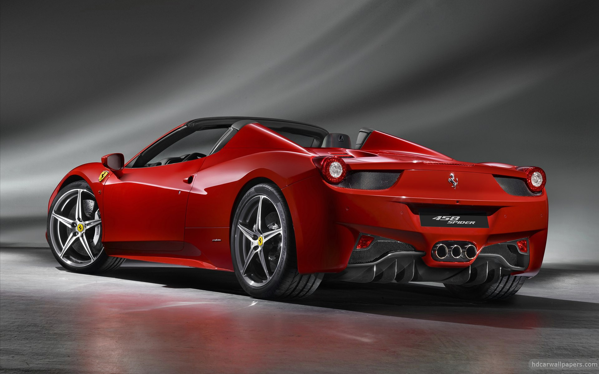
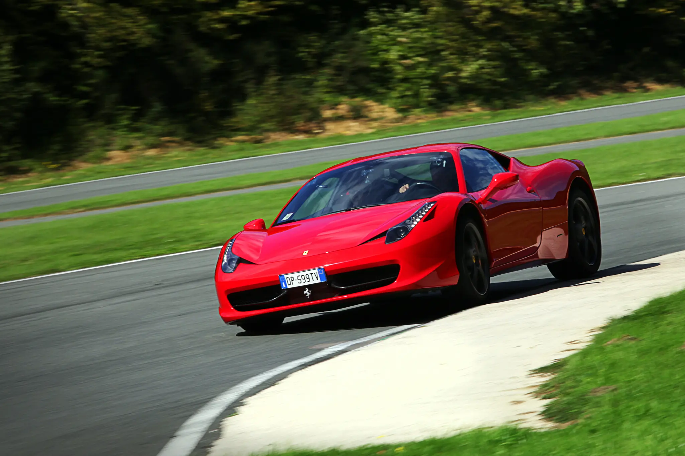
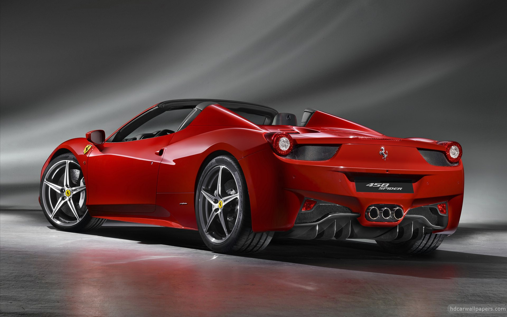
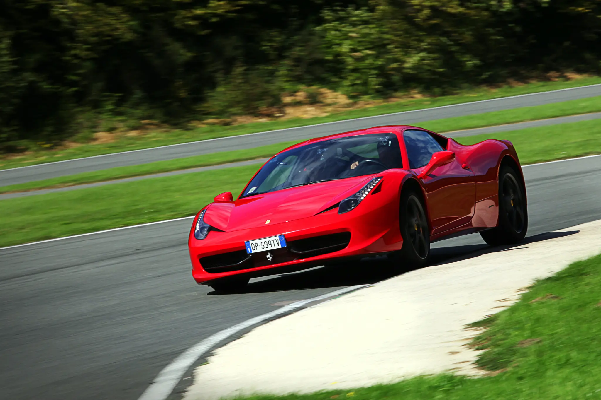

Ferrari 458 FOR SALE!
Ferrari 458: Italian Craftsmanship and Pure Performance
Overview
The Ferrari 458 is a masterpiece of Italian craftsmanship, designed to deliver pure driving exhilaration and breathtaking performance. With its iconic Ferrari styling and mid-engine layout, the 458 is a true representation of Ferrari’s commitment to excellence. The sleek and aerodynamic body, coupled with its bold Ferrari design language, makes it an unmistakable presence on any road or track.
Performance and Features
The Ferrari 458 is powered by a naturally aspirated 4.5L V8 engine, capable of producing up to 562 horsepower. It can accelerate from 0 to 100 km/h in a lightning-fast 3.4 seconds, with a top speed of 325 km/h. The engine is mated to a 7-speed dual-clutch transmission that delivers seamless gear shifts, ensuring an exhilarating yet smooth driving experience.
Inside, the Ferrari 458 combines luxury and performance-focused design. The cabin features premium materials, including leather and carbon-fiber accents, and the cockpit is designed with the driver in mind, featuring a flat-bottom steering wheel with integrated controls. Advanced tech like Ferrari’s F1-inspired suspension and electronic driver aids ensure that the 458 offers a perfect balance of performance and drivability.
Market Price
The market price for a Ferrari 458 typically starts at around $240,000 in the United States, but prices can go higher depending on the model year and customizations. In South Africa, prices range from R3.5 million to R5 million, depending on the condition and specific configuration of the vehicle.
The Ferrari 458 is more than just a sports car—it’s a symbol of performance, luxury, and precision engineering, offering one of the most thrilling driving experiences in the world of supercars.